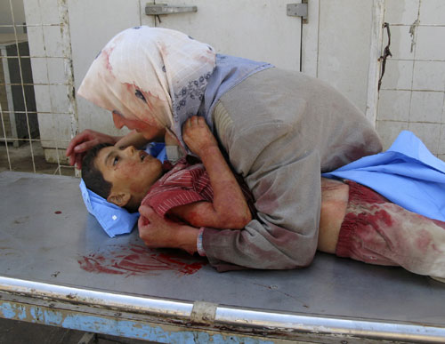

POSTS
AP통신이 선정한 ‘올해의 보도사진(2007)’ 중 이라크

나쁜 어른들은 이 아이에게 무슨 짓을 했는가?
아이의 눈을 보자. 보고 또 보고 모니터에 구멍나도록 보고 내일도 또 보자.
(한 이라크 여인이 지난 2007년 9월 16일 바그다드 동북쪽 바쿼바에서 총을 맞고 죽어가는 6살난 아들의 시신을 껴안고 흐느끼고 있다.2003년 미국의 침공 이래 이라크는 사회 안정은 커녕 올해도 매월 수백명이 교전과 무력충돌 등으로 사망했다. 굶주림과 분쟁을피해 고향을 떠난 400여만명의 난민이 주변 국가를 떠돌고 있다. 미군도 올 한해 800여명 이상이 죽어 ‘최악의 해’를 맞았다.)
(출처 : http://photo.media.daum.net/gallery/surprise0407/200712/11/khan/v19205580.html)